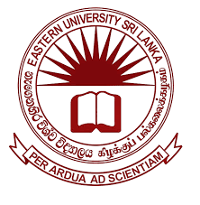

EASTERN UNIVERSITY, SRI LANKA

HISTORY OF EASTERN UNIVERSITY
- 1981: Established as the Batticaloa University College.
- 1986: Upgraded to a full-fledged national university as Eastern University, Sri Lanka.
- 1995: Swami Vipulananda Institute of Aesthetic Studies (SVIAS) was affiliated with the university.
- 2005: Trincomalee Campus was established as a constituent campus under Eastern University.
AVAILABLE FACULTIES
- Faculty of Agriculture – කෘෂිකර්ම පීඨය
- Faculty of Arts and Culture – කලා හා සංස්කෘතික පීඨය
- Faculty of Commerce and Management – වාණිජ හා කළමනාකරණ පීඨය
- Faculty of Science – විද්යා පීඨය
- Faculty of Health-Care Sciences – සෞඛ්ය සංරක්ෂණ විද්යා පීඨය
- Faculty of Technology – තාක්ෂණවේද පීඨය
- Faculty of Graduate Studies – පශ්චාත් උපාධි අධ්යයන පීඨය
GO TO OFFICIAL WEBSITE OF EASTERN UNIVERSITY
GO TO HOME PAGE